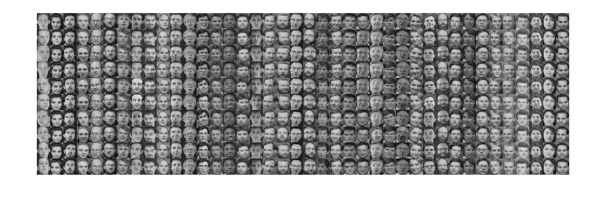
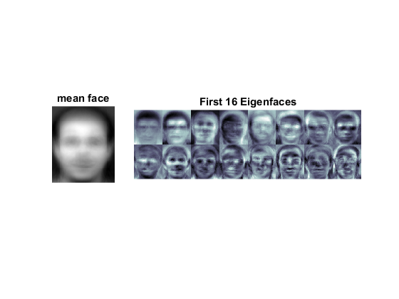
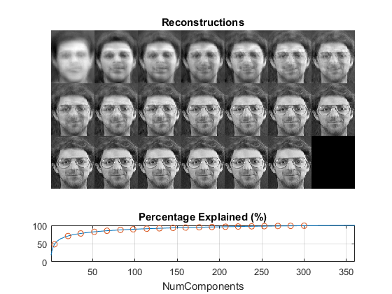

Face recognition demo
Demonstration of face recognition with OpenCV.
The currently available algorithms are:
- Eigenfaces
- Fisherfaces
- Local Binary Patterns Histograms
See this page for a complete tutorial: https://docs.opencv.org/3.1.0/da/d60/tutorial_face_main.html
Sources:
- https://github.com/opencv/opencv_contrib/blob/3.1.0/modules/face/samples/cpp/facerec_demo.cpp
- https://github.com/opencv/opencv_contrib/blob/3.1.0/modules/face/samples/cpp/facerec_eigenfaces.cpp
- https://github.com/opencv/opencv_contrib/blob/3.1.0/modules/face/samples/cpp/facerec_fisherfaces.cpp
- https://github.com/opencv/opencv_contrib/blob/3.1.0/modules/face/samples/cpp/facerec_lbph.cpp
Contents
Options
% face recognizer type recognizer = 'Eigenfaces'; % Eigenfaces, Fisherfaces, LBPH % Eigenfaces: this performs a full PCA, if you just want to keep 10 principal % components (Eigenfaces), then set it to 10 % Fisherfaces: If you just want to keep 10 Fisherfaces, then set it to 10 % However it is not useful to discard Fisherfaces! Please always try to use % all available Fisherfaces for classification. numComp = 0; % if you want to set a confidennce threshold, set it to e.g. 123.0 thresh = realmax; % test set split ratio P = 0.1;
Database
In this example, we use the AT&T Facedatabase, sometimes also referred to as ORL Database of Faces, contains ten different images of each of 40 distinct subjects. For some subjects, the images were taken at different times, varying the lighting, facial expressions (open / closed eyes, smiling / not smiling) and facial details (glasses / no glasses). All the images were taken against a dark homogeneous background with the subjects in an upright, frontal position (with tolerance for some side movement).
The files are in PGM format. The size of each image is 92x112 pixels, with 256 grey levels per pixel. The images are organised in 40 directories (one for each subject), which have names of the form sX, where X indicates the subject number (between 1 and 40). In each of these directories, there are ten different images of that subject, which have names of the form Y.pgm, where Y is the image number for that subject (between 1 and 10).
A copy of the database can be retrieved from: http://www.cl.cam.ac.uk/research/dtg/attarchive/facedatabase.html
download/extract files if needed
ATTFolder = fullfile(mexopencv.root(),'test','att_faces'); if ~isdir(ATTFolder) mkdir(ATTFolder); zipFile = fullfile(mexopencv.root(),'test','att_faces.zip'); if exist(zipFile, 'file') ~= 2 url = 'http://www.cl.cam.ac.uk/Research/DTG/attarchive/pub/data/att_faces.zip'; disp('Downloading AT&T Faces...'); urlwrite(url, zipFile); end disp('Extracting files...'); unzip(zipFile, ATTFolder); end
read all images (grayscale) and record corresponding labels
folders = dir(fullfile(ATTFolder, 's*')); NL = numel(folders); w = -1; h = -1; % image width/height fprintf('Loading images... ') labels = []; images = {}; for i=1:NL files = dir(fullfile(ATTFolder, folders(i).name, '*.pgm')); for j=1:numel(files) fname = fullfile(ATTFolder, folders(i).name, files(j).name); img = cv.imread(fname, 'Grayscale',true); labels(end+1) = i; images{end+1} = img; if w<0 || h<0 [h,w,~] = size(img); else assert(h==size(img,1) && w==size(img,2), ... 'Images should be of the same size!'); end end end fprintf('Done\n'); assert(numel(images) > 1, 'This demo needs at least 2 images to work.'); if h<50 || w<50 disp('For better results images should be not smaller than 50x50!'); end
Loading images... Done
show the full dataset (40 people with 10 views each)
if mexopencv.require('images') % each column is a different person, with different views across rows im = reshape(images,[10 40])'; montage(cat(4,im{:}), 'Size',[10 40]); clear im end
Warning: Image is too big to fit on screen; displaying at 33%
helper function to reshape and normalize a feature vector for visualization
vec2img = @(vec) cv.normalize(reshape(vec, [w h]).', ... 'Alpha',0, 'Beta',255, 'NormType','MinMax', 'DType','uint8'); img2vec = @(img) reshape(img.', 1, []);
split the images into train/test sets by holding out a part for testing (this is done so that the train and test data do not overlap)
C = cvpartition(labels, 'HoldOut',P) if mexopencv.isOctave() %HACK: Octave's CVPARTITION implemented using old class OOP (pre classdef) % which doesn't expose properties but accessor methods CTestSize = get(C, 'TestSize'); else CTestSize = C.TestSize; end %tabulate(labels(test(C)))
ans =
Hold-out cross validation partition
NumObservations: 400
NumTestSets: 1
TrainSize: 360
TestSize: 40
Create face recognizer
create an model for face recognition
if strcmp(recognizer, 'LBPH') model = cv.LBPHFaceRecognizer('Threshold',thresh); else model = cv.BasicFaceRecognizer(recognizer, ... 'NumComponents',numComp, 'Threshold',thresh); end display(model); disp(model.typeid())
model =
BasicFaceRecognizer with properties:
id: 1
NumComponents: 0
Threshold: 1.7977e+308
class cv::face::Eigenfaces
set labels info (person name corresponding to each class label)
%labelsInfo = containers.Map(1:NL, {folders.name}); for i=1:NL model.setLabelInfo(i, folders(i).name); end
Train
train model with images/labels read
fprintf('Training... '); tic
model.train(images(training(C)), labels(training(C)));
tocTraining... Elapsed time is 5.695211 seconds.
save/load trained model
saveModelPath = 'face-rec-model.yml'; if false model.save(saveModelPath); model.load(saveModelPath); end
Predict
predict the label of given test images
fprintf('Predicting... '); tic labelsHat = zeros(1, CTestSize); confidences = zeros(1, CTestSize); testInd = find(test(C)); % indices of test images for i=1:CTestSize [labelsHat(i), confidences(i)] = model.predict(images{testInd(i)}); end toc
Predicting... Elapsed time is 0.378952 seconds.
Evaluation
acc = nnz(labels(test(C)) == labelsHat) ./ CTestSize; fprintf('Accuracy = %.2f%%\n', acc*100); if false cm = confusionmat(labels(test(C)), labelsHat); disp('Confusion Matrix:'); disp(cm); end disp('Misclassifications:'); ind = find(labels(test(C)) ~= labelsHat); % indices of misclassification for i=1:numel(ind) fprintf(' Predicted = %2d (%3s), Actual = %2d (%3s) [Conf/Dist = %g]\n', ... labelsHat(ind(i)), model.getLabelInfo(labelsHat(ind(i))), ... labels(testInd(ind(i))), model.getLabelInfo(labels(testInd(ind(i)))), ... confidences(ind(i))); end
Accuracy = 97.50% Misclassifications: Predicted = 7 (s15), Actual = 11 (s19) [Conf/Dist = 3759.37]
Visualize results
if strcmp(recognizer, 'LBPH') % There's no cool data to show as in Eigen/Fisher faces. Due to % efficiency reasons the LBP images are not stored within the model. % We could perhaps visualize the histograms? histograms = model.getHistograms(); fprintf('Size of the histograms: %d\n', numel(histograms{1})); else % get the mean, eigenvectors and eigenvalues of the training data % X{i} : 1-by-(w*h) % M : 1-by-(w*h) % W : (w*h)-by-NumComponents % EV : 1-by-NumComponents % Y{i} : 1-by-NumComponents M = model.getMean(); W = model.getEigenVectors(); EV = model.getEigenValues(); %Y = model.getProjections(); % collect the first 16 eigenfaces/fisherfaces out = cell(1, min(16, model.NumComponents)); for i=1:numel(out) % i-th eigenvector: reshaped to image size and normalized to [0,255] gray = vec2img(W(:,i)); % apply a colormap for better sensing out{i} = cv.applyColorMap(gray, 'Bone'); end figure(2) subplot(1,4,1), imshow(vec2img(M)), title('mean face') subplot(1,4,2:4), montage(cat(4,out{:}), 'Size',[2 NaN]) title(sprintf('First %d %s', numel(out), recognizer)) % image reconstruction at some predefined steps if strcmp(recognizer, 'Eigenfaces') steps = round(linspace(5, min(300,model.NumComponents), 20)); else steps = 1:min(16,model.NumComponents); end display(steps) % pick an image at random, and compute its successive reconstructions X = img2vec(images{randi(numel(images))}); out = cell(1, numel(steps)); for i=1:numel(steps) % slice eigenvectors if strcmp(recognizer, 'Eigenfaces') WW = W(:,1:steps(i)); else WW = W(:,steps(i)); end % project and reconstruct using truncated eigenvectors % Y = (X-M)*W, XX = Y*W'+M projection = cv.LDA.subspaceProject(WW, M, X); reconstruction = cv.LDA.subspaceReconstruct(WW, M, projection); % normalize the result and reshape it to image size out{i} = vec2img(reconstruction); end figure(3) subplot(4,1,1:3), montage(cat(4,out{:}), 'Size',[3 NaN]) title('Reconstructions') prcnt = 100 * cumsum(EV) ./ sum(EV); subplot(4,1,4), plot(1:model.NumComponents, prcnt, '-', ... steps, prcnt(steps), 'o') axis([1 model.NumComponents 0 100]), grid on title('Percentage Explained (%)'), xlabel('NumComponents') end
steps =
Columns 1 through 13
5 21 36 52 67 83 98 114 129 145 160 176 191
Columns 14 through 20
207 222 238 253 269 284 300
